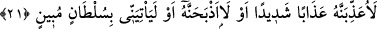
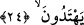

HÜDHÜDÜ
NİÇİN GÖREMİYORUM?
20. (Süleyman) kuşları gözden geçirdi ve şöyle dedi: Hüdhüdü niçin
göremiyorum? Yoksa kayıplara mı karıştı?
21. Ona şiddetli bir azâb edeceğim ya da onu boğazlayacağım. Yahut da bana
(mâzeretini belirten) açık bir delil getirecek.
Ya bana (mâzeretini gösteren) apaçık bir delil getirecek ya da onun canını iyice
yakacağım yahut onu boğazlayacağım!
22. Çok geçmeden (hüdhüd) gelip şöyle dedi: Ben, senin bilmediğin bir şeyi
öğrendim. Sebe’den sana çok doğru (ve önemli) bir haber getirdim.
23. Gerçekten, onlara (Sebe’lilere) hükümdarlık eden, kendisine her şey verilmiş
ve büyük bir tahtı olan bir kadınla karşılaştım.
24. Onun ve kavminin, Allâh’ı bırakıp güneşe secde ettiklerini gördüm. Şeytan,
kendilerine yaptıklarını süslü göstermiş de onları doğru yoldan alıkoymuş. Bunun
için doğru yolu bulamıyorlar.
“(Süleyman) kuşları gözden geçirdi” el-Kâmûs’ta der ki: “
” ortada olmadığında
onu aradı demektir.” Keşfü’l-esrâr’da ise şöyle der: “
” kaybolan şeyi aramak,
demektir. “
” denilmesi, bir şeyi taleb edenin onun bir kısmını elde edip diğer
kısmını kaybettiğinden dolayıdır. el-Müfredât’ta der ki: “
”, “
” mânâsınadır.
Ancak “
” bir şeyin kaybolduğunu anlamaya çalışmak, “
” ise daha önce bilineni
anlamaya çalışmaktır. el-Vasît’ta belirtildiği üzere “
” kuş cinsinin genel ismidir.
Yâni Süleyman (a.s.) kuşların durumunu sorup öğrendi, fakat onların arasında
hüdhüdü göremedi. O, hüdhüd kuşlarının reîsi olup adı Ya’fûr idi.